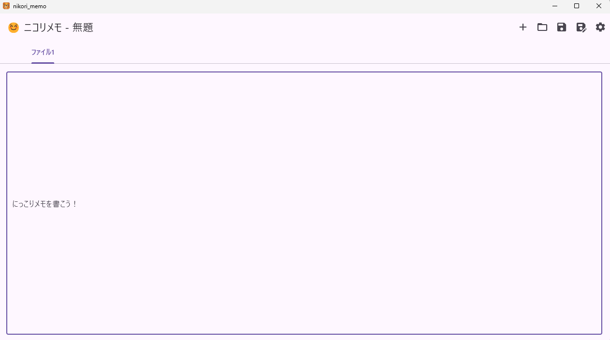

📝 ニコリメモ - インストーラー配布ページ

デスクトップで動くメモ帳アプリ「ニコリメモ」をリリースしました！
日本語・英語切り替え、フォント切り替えにも対応するように改良する予定です。
お気軽にご利用ください！
タブ編集、テーマ変更にも対応しています。
🔧 使い方
- インストール後、デスクトップまたはスタートメニューから「ニコリメモ」を起動できます。
- Ctrl+S で保存、ファイルを複数開くタブ機能あり。
- .txtファイルを右クリック→「プログラムから開く」で関連付け可能。